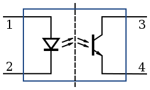

Triac
Triac work with AC only. In fact it turns the circuit on until the voltage is above a minimum level... that is constant in DC, so it will never turn off! As for AC, beware if it has no zero-cross system. Zero cross are smart and will turn off the circuit at the moment the AC goes 0 (or so). Otherwise, beware of magnetic waves if the current stops abruptly in the middle of a cycle.
Misc doc
Opto coupler / photocoupler
Optocoupler works with DC. It's a led and a photo-transistor in a box. When light is on, the transistor transmits the current. Simple as that. Very fast switching speed.

Taken from wikipedia